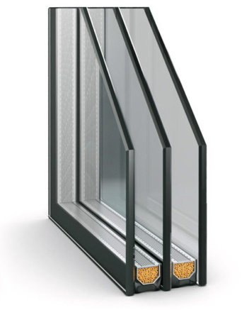
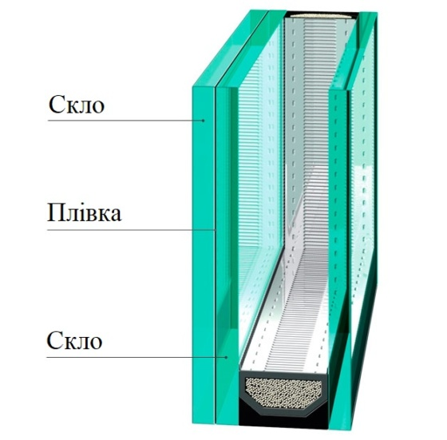

Металопластикові вікна
Пластикові вікна виробляються в дуже широкому розмаїтті конструктивних варіантів.
Відрізняються вони формою, розміром, кількістю стулок, способом їх відкривання,
видом склопакетів і особливостями профілю. Вікно встановлюється не на один рік,
коштує воно поки що чимало; тому варіант конструкції необхідно ретельно продумати.
Часто конструкції які вам сподобалися виявляються не дуже зручними в користуванні, або занадто дорогими.
Види вікон за кількістю стулок
Особливості матеріалу рами і склопакетів дозволяють виготовляти металопластикові вікна
з будь-якою кількістю стулок. Найчастіше зустрічаються одне, двох або тристулкові.
Варіант визначається місцем установки, екстер’єром будинку і розмірами вікна.
Якщо вікно невелике, десь в межах 1,5 х 1м, то однієї стулки буде цілком достатньо.
Вікна більшого розміру повинні бути обладнані двома стулками.
Трьома оснащуються широкі і високі вікна, площа яких дозволяє використовувати досить
великі склопакети. Особливості конструкції пластикових вікон вимагають
досить потужних вертикальних стійок між стулками, особливо що відкриваються.
Різновиди вікон в залежності від способу відкривання стулок
Обираючи пластикові вікна, необхідно визначитися з типом стулок. Вони визначають функціональність
конструкції та комфорт при її експлуатації. Тип стулок необхідно вибирати в залежності від розміру
конструкції, кількість вікон в кімнаті та необхідністю регулярного провітрювання.
Глухе вікно
Стаціонарна конструкція з рами та склопакета. Глухі вікна не мають фурнітури і не відкриваються.
Найчастіше їх встановлюють, як елемент багатостулкового вікна або в якості вітрини.
Поворотні стулки
Поворотні стулки можуть відкриватися виключно всередину будинку по вертикальній осі. Такими можуть
бути обидві стулки в двостулковому вікні, або дві бічні в тристулковому. Цей варіант досить зручний,
якщо вікон в будинку багато і на одному або двох з них встановлені відкидні, або поворотно-відкидні
механізми відкривання. В такому випадку не виникає проблем ні з миттям вікон, ні з провітрюванням кімнат.
Відкидні стулки

Відкидні стулки — відкриваються тільки частково, шляхом зміщення верхньої частини всередину, при цьому
нижня перекладина закріплена на горизонтальній осі. Кут відкривання визначається вбудованими обмежувачами.
Дуже зручно для провітрювання кімнати, нескладний механізм, здешевлює конструкцію. Але такі стулки бажано
встановлювати разом з поворотними — простіше буде мити.
Комбіновані стулки
Це стандартний і найпоширеніший тип відкривання, він підходить для будинків і квартир. Механізм відкривається
в горизонтальній і вертикальній площині, він підходить для прямокутних, аркових і трапецієподібних конструкцій.
При такому варіанті можливе мікрощілинне провітрювання.
Фрамужні

Невеликі віконні вироби фрамужного типу оптимальні для маленьких приміщень і різних нежитлових кімнат.
Пластикові фрамужні вікна відмінно підійдуть для: кухні, котельні, ванної кімнати або передпокою; забезпечать
хороше освітлення і легке провітрювання. Компактний металопластиковий виріб невимогливий у догляді і стильне зовні.
Штульпове вікно

Конструкція без серединної перегородки, що називається імпостом і відкривається за принципом двостулкових дверей.
Відповідно, основним елементом є штульп – кріплення, що забезпечує фіксацію стулок. Щоб відкрити вікно, потрібно
всього лише відсунути затвор і розкрити стулки. Причому половинка вікна з ручкою «працює» у двох режимах: провітрювання
і відкривання, а частина зі шпінгалетів тільки відкривається. Ще одна помітна особливість: вікно відкривається назовні,
що дозволяє розкрити його буквально навстіж і не займати простір всередині приміщення.
Різновид вікон за типом склопакета
Скління пластикових вікон проводиться за допомогою складних конструкцій з двох, трьох або чотирьох аркушів скла, закріплених
на заданій відстані один від одного. Зовнішня частина герметизирована. Утворені всередині, між склом, порожнини називаються камерами.
Однокамерні склопакети
Товщина склопакета однокамерного (два листа скла і порожнина між ними) знаходиться в межах 14 — 32 мм. Простір між шибками по периметру закрито металевою смугою, яка розділяє скло і утримує його на заданій відстані —називають дистанційною рамкою. У розрізі видно, що рамка аж ніяк не смуга, а «П» -подібний профіль, спрямований відкритою стороною всередину рами. У нижній частині рами зроблено отвори невеликого діаметру, що з’єднують камеру і спеціальний герметичний об’єм всередині рами, в якому засипаний поглинач вологи. В результаті дії абсорбенту волога з камери видалена майже повністю і вікно не пітніє при будь-якій температурі зовні. Але однокамерні пакети вважаються морально застарілими. Вони встановлюються на не надто відповідальні вікна в неопалюваних приміщеннях, на балконах, лоджіях, в магазинах, виробничих приміщеннях і т.п. У житлових будинках використовуються більш складні конструкції — двокамерні (три листи скла і дві порожнини між ними). Вони трохи важче однокамерних, але по ефективності тепло і шумоізоляції перевершують їх майже вдвічі. При цьому світлопропускна здатність обох конструкцій приблизно однакова.

Двокамерні склопакети
При використанні скла товщиною в 4 мм загальна монтажна глибина двокамерного пакета становить від 30 до 58 мм. Часто виробники заповнюють камери аргоном, ксеноном або іншим інертним газом, але це виправдано тільки при використанні енергозберігаючих І-шибок з напиленням. Якщо вам намагаються дорожче продати заповнені інертним газом пакети зі звичайного скла — не піддавайтеся на рекламні виверти. У кращому випадку ви отримаєте 1-2% зниження теплопровідності. При використанні I-шибок різниця може досягти 10 — 15% від загального теплозберігаючого ефекту. Це вже досить пристойна цифра. У порівнянні зі звичайним склом, двокамерний склопакет знижує рівень вуличного шуму в кілька разів. За абсолютною величиною це становить понад 45 дб. При цьому вартість такого пакета не набагато вище однокамерного.
Різновид вікон за типом склопакета
Теплозберігаючі
Металізована плівка, невидима оку, напилюється на скло і відображає теплову частину спектру, пропускаючи, одночасно, всі видимі промені. Скло має відмінну прозорістю і не спотворює квітів, але не дає спеці проникнути всередину влітку, а взимку тепло залишається в приміщені у вигляді інфрачервоного випромінювання.
.jpg)
Удароміцні
Замість звичайного флоат-скла застосовуються загартоване або триплекс. Воно не відрізняється за своєю прозорістю, але набагато міцніше. Найчастіше встановлюються на виробничих об’єктах, в навчальних закладах, в магазинах. Зручно встановити такі вікна і на нижніх поверхах, захищаючи склопакет від випадкового удару або навмисного акту вандалізму. Такі шибки повністю безпечні, навіть розбившись, вони розсипаються на прямокутні шматочки, нездатні завдати травму, або залишаються приклеєними до міцної полімерної плівки.

Шумозахисні
Як правило, в них застосовується кілька технологічних прийомів. Крім напилення тонких плівок, камери заповнюються інертними газами, а товщина дистанційних камер робиться різною. В результаті цього звукові коливання активно гасяться, відбиваючись від проміжних поверхонь. У порівнянні зі звичайним двокамерним, шумоізоляційний склопакет знижує рівень зовнішнього шуму на 20% більше.
Дзеркальні та тоновані
Виробляється таке скло двома способами — напиленням металізованої або полімерної плівки на поверхню, або додаванням оксидів металів в масу скла при виготовленні. У другому випадку колір виходить виключно стійким, а кількість проникаючого в кімнату світла знижується мінімально. Зовнішній вигляд дзеркального скла дуже цікавий, можна вибрати різні відтінки : від золотистого і срібного, до смарагдового, блакитного або перлового.
Різноманітність форм вікон
Крім стандартних прямокутних і квадратних вікон, замовити можна конструкції практично будь-якої форми. Тільки необхідно знайти виробника, який робить подібні вікна — це дуже складні вироби і багато майстерень, які відмінно роблять стандартні вікна, навіть не беруться за складні. Якщо трикутні або шестикутні ще можна виготовити на звичайному обладнанні, то аркові, круглі або овальні збираються на спеціальних верстатах.

Кольорові та ламіновані вікна
Розглянувши пластикові вікна , види яких описані вище, можна розширити вибір елементами різного декору, наприклад : замість звичайного білого профілю вибрати пофарбований в один з 150 кольорів RAL. Для фарбування застосовуються спеціальні склади, що утворюють міцне покриття, (на зразок полімерного), товщиною всього в 80 мікрон.
Так само високою стійкістю і довговічністю відрізняється ламінування — приклеювання спеціальної плівки, що імітує поверхню дерева, на профіль. Робиться це під високим тиском і температурою , виключно на спеціальних машинах. Від звичайного дерева такі поверхні відрізняються тільки стійкістю до вологи і довговічністю. Якісно наклеєний ламінат прослужить не менше, ніж саме вікно.
Вітражі
До оригінального виду декорування належить вітражування склопакетів. Виконуються воно на внутрішніх шибках двокамерних склопакетів , і крім абсолютно дивовижних візуальних ефектів, вони відрізняються високою стійкістю і довговічністю. Їх нічим не можна пошкодити, а фарби, лаки і спеціальні олов’яні розділові елементи розраховані на десятиліття експлуатації. Важливо тільки вибрати малюнок, який максимально відповідає стилю оформлення будинку.